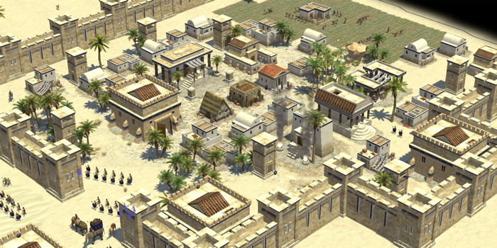

Possible twitter feeds go here. Most likely via Twitter embed API.
Update Title
Last updated on 12/26/2011
Alpha 8 Released
Unveiling the next chapter in the game... read more!
Possible twitter feeds go here. Most likely via Twitter embed API.
Last updated on 12/26/2011
Unveiling the next chapter in the game... read more!